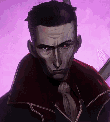
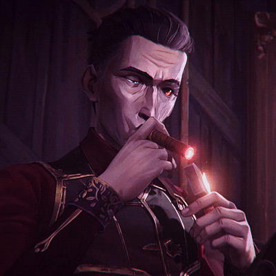
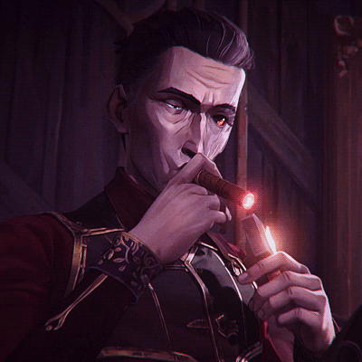

SILCO
 

First Appearance: Episode 1 - *Welcome to the Playground*
Silco, the charismatic yet ruthless leader of the Zaun underworld, is introduced in the very first episode of *Arcane*. He is a pivotal character whose actions and motivations play a central role in the conflict between Piltover and Zaun.
Silco is determined to elevate Zaun to its rightful place, even if it means embracing chaos and violence. His complex relationship with Jinx (formerly Powder) is a driving force in the series, as he becomes both a mentor and a manipulator, steering her towards her full transformation.